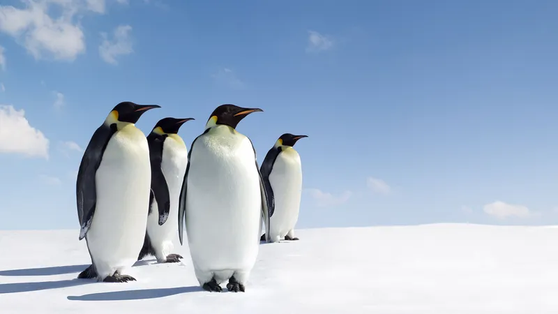

5 facts about penguins
1. Penguins are birds designed by evolution to swim, not fly. Their wings have evolved into flippers, and although they usually walk straight on the ground, some fall onto their bellies to fly across the ice. Most species travel underwater at an average speed of 4-7 mph, but Gentoo can reach speeds of up to 22 mph.
2. All penguins live south of the equator. Although we often associate them with Antarctica, they are also found further north on the beaches and rocky shores of coastal South America, the Galapagos Islands, Australia and South Africa.
3. The oldest known species of penguin, the Waimanu Maningi, was discovered in New Zealand as a 62-million-year-old fossil. It was similar to an eider and had short wings designed for diving, but not for flying.
4. The smallest penguin is the little blue or fairy penguin, which grows to just over two pounds and 16 inches tall and is found in Australia and New Zealand.

5. The largest known penguin of all time is Anthropornis nordenskjoeldi or the giant penguin, which lived over 37 million years ago and stood 5 feet 7 inches tall and weighed 200 pounds. Its size rival, the New Zealand giant, originated about 30 million years ago, stood 5 feet tall and weighed about 130 pounds.